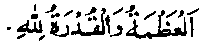

Chapter Seven
55. Bahlool admonishes Haroon Rashid
Once Khalifah Haroon Rashid Rahmatullah alaihe was going on a journey for Hajj and stopped for a few days in Kufah. At the time of his departure from Kufah,a large crowd gathered on the outskirts of the city to watch the Khalifah’s cavalcade. The renowned ascetic, Bahlool (called Bahlool the lunatic) also came out and sat on a dung-hill outside the city. The street-urchins who used to tease Bahlool Rahmatullah alaihe, mocking and throwing stones at him, gathered round him as usual. When the Khalifah rode past him, the boys ran away and Bahlool addressed Amir-ul-Mo’mineen in a loud voice saying, "O Amir-ul-Mo’mineen! O Amir-ul-Mo’mineen!". At this, Haroon Rashid raised the curtain of the Howdah of his riding-beast, looked out and said, "At your service, O Bahlool, what do you want?" Bahlool Rahmatullah alaihe said," Amir-ul-Mo’mineen! A man related to me on the authority of Qudamah Radhiallaho anho that, when Rasulullah Sallallaho alaihe wasallam was going for Hajj, he (Qudamah) saw him in Minaa riding a camel with a simple howdah on its back; there was no noise of driving people away or telling them to move aside. Amir-ul-Mo’mineen, it would be far better for you, if you also rode in humility, instead of going in a proud pageant." Haroon Rashid wept on hearing these words and said, "Counsel me further, O Bahlool, May Allah bless you!". Bahlool recited two couplets, which meant: "True, you are an emperor of the world and all men owe allegiance to you! So what? For, tomorrow you will be laid down in the pit of the grave for your abode. And men will throw dust upon you, from all sides to cover you." At this, the Khalifah wept bitterly and said, "Bahlool, give me some more advice," ‘Bahlool said, "Amir-ul-Mo’mineen, when Allah Ta'ala grants prosperity and physical beauty to a person and he spends his wealth for the cause of Allah, and protects his beauty from the taint of sins, his name is recorded, in the register of Allah, among the names of the pious ones".
Haroon'Rashid said, "You have given me good counsel, Bahlool, you deserve a reward." Bahlool said, "Give back the amount (of reward) to those who have paid it to you (in taxes). I do not want any reward from you." Haroon Rashid asked him if he owed any debts to people, wishing to pay them off on behalf of Bahlool, but he replied, "O Ameer, debts do not settle debts (meaning the money in your possession is a trust of the Muslim Community and is, thus, a debt owing from you to them). First pay back what is due from you to the people; pay off your own debt first,and then think of others’ debts" The Khalifah said, "Shall I settle upon you some endowment, to provide for your needs?" Bahlool said, "Both you and I are slaves of Allah; It would be strange if he provided for your needs, and not for mine". After this, Haroon Rashid dropped the curtain of his'Howdah and rode away (Raudh).
It is common knowledge that’Haroon Rashid wept profusely when an admonition was addressed to him. Once he was going on a journey for Hajj when he came across Sa'doon (the lunatic), who recited to him a few verses which meant: "Even though you are made the emperor of the world, you cannot escape death; leave the 1 world unto your enemies (Kaafirs); for though it is smiling today in your face, tomorrow, surely, it will make you grieve." On hearing these verses, Haroon Rashid cried out in bitterness, swooned and remained unconscious for so long that he could not observe three Fardh (obligatory) Salaats on prescribed time. (Raudh). His signet-ring bore the inscription:

‘Allah is the Lard of Majesty, Lord of Infinite power;
Which shows that he always kept in view, Allah’s Majesty and His Infinite Power.